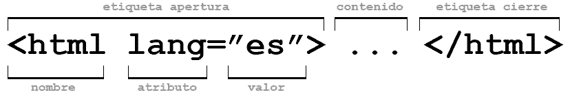

TEMA 2: Atributos y valores
Una etiqueta puede tener uno o más atributos los cuales deben ir separados por espacios. De acuerdo con Cordero, J. J. T. (2014), los atributos están dentro de las etiquetas y especifican la acción que se desea realizar. Por ejemplo, la etiqueta table nos permite crear una tabla, y mediante el atributo "border" podemos especificar el borde que queremos darle a nuestra tabla.
Por otro lado, el valor representar una cantidad exacta, característica especifica o simplemente en que medida se ejecutará en el atributo. Los valores se especifican entre comillas después de un signo igual (=). Según el atributo puede haber una gran variedad de valores disponibles.
Por ello, la estructura de una etiqueta con atributos y valores debe ir en el siguiente orden:
